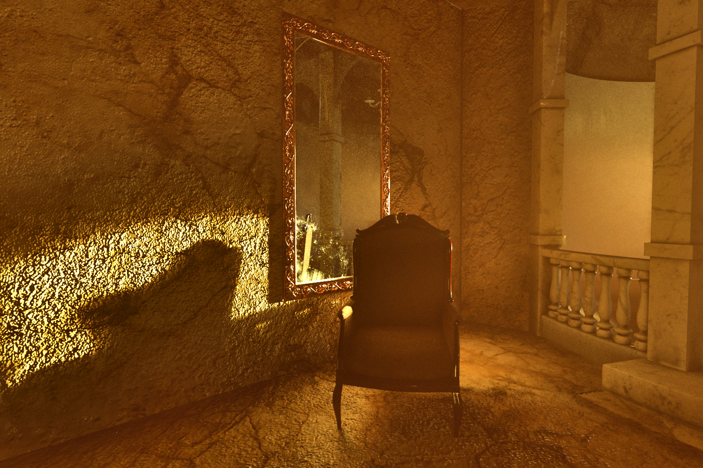
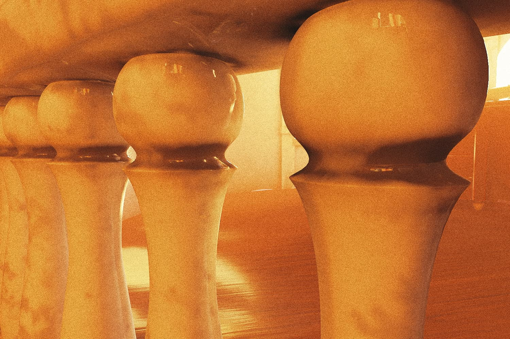
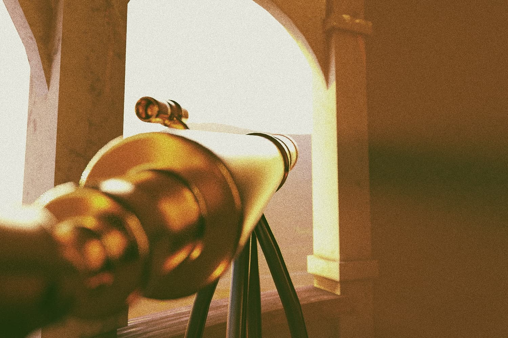
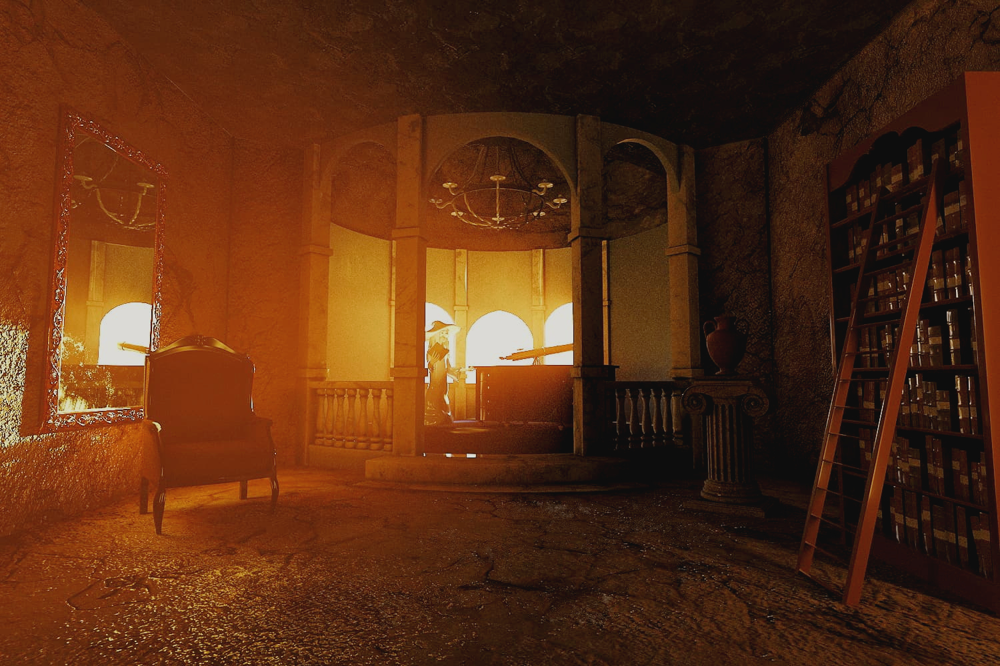

Summary
This project was a modelling project where the group wanted to focus on texturing and rendering in a 3D modelling software. It was created as part of a course at Linköping University in 3D Computer Graphics.
Our inspiration for this project was to create a scene that was somewhere between fantasy and reality where we could get a magical and low lightning environment where the light falls nicely on our models.
My responsibilities in the project was modelling of an old armchair in the scene that had lots of small details and patterns. I spent a lot of time texturing the chair and I also helped with choices and inputs regarding textures in the whole scene.
Technical Walkthrough
We started with sketching up how our room should look like. We got a bit of inspiration from Dumbledore's office in Harry Potter and we did a simple model in 3Ds Max where we put square objects where our finished models should be placed.
Together we made a list of items we wanted to have in the room and then each project member chose an item to start modelling. I wanted to really learn a bunch of different tools in 3Ds Max so I started working on a tutorial for modelling an old armchair with lots of small details. I put in many hours using free hand modelling from an image and ended up with the model below.
After the modelling part I started with the texturing. I used image based textures and put out "seems" on the model to help the texturing. I then used UV-unwrapping for every surface and tweeked until I got a result I was pleased with. For some parts I could use the built-in unwrapping tool for boxes or planes.
As the models started to take form we imported everything into the room that one of the group members had worked on texturing. Together we established some camera angles to get both close ups and overview shots. Some of the resulting images can be seen below.
  We were pleased with some of the resulting images. We managed to get that magical feeling we were aiming for but we would've used some different approaches if we were to restart the project. Mainly we should've used more light sources to highlight the darker areas and get a more compelling image of our modelled items.